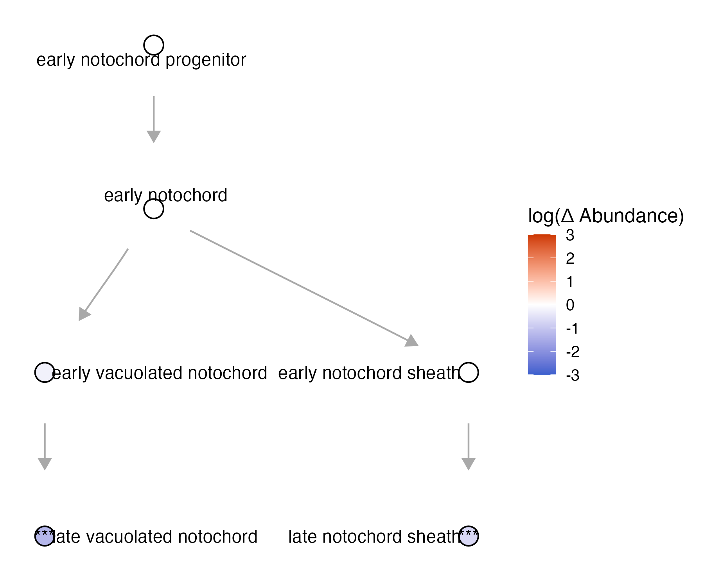
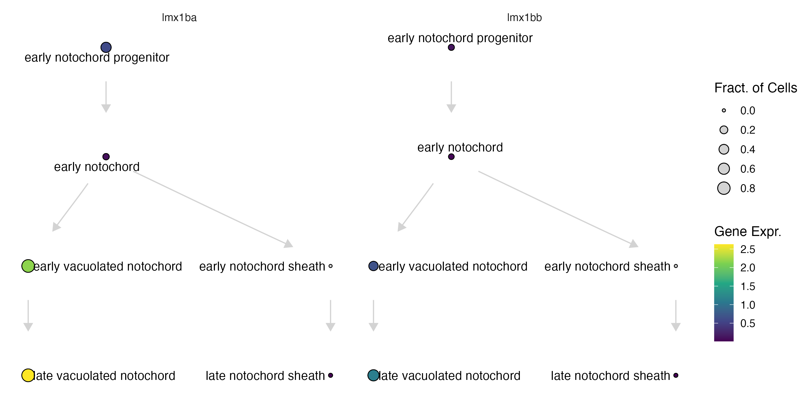
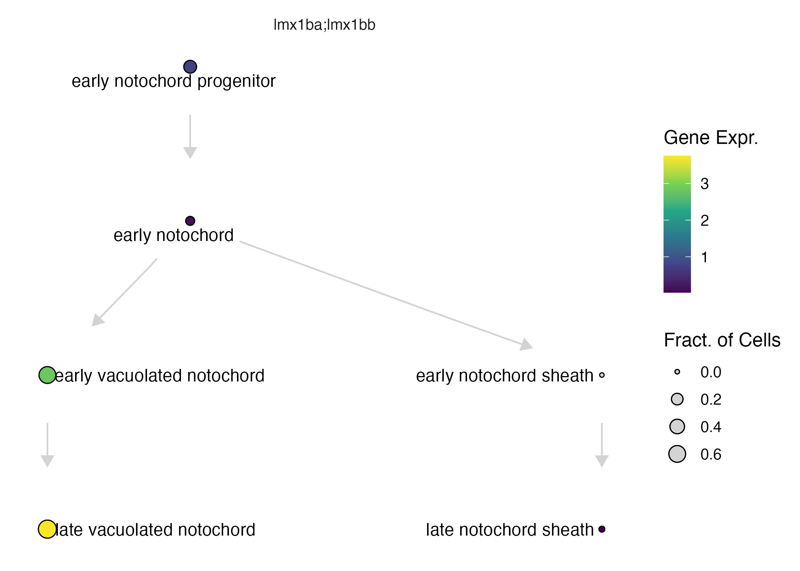
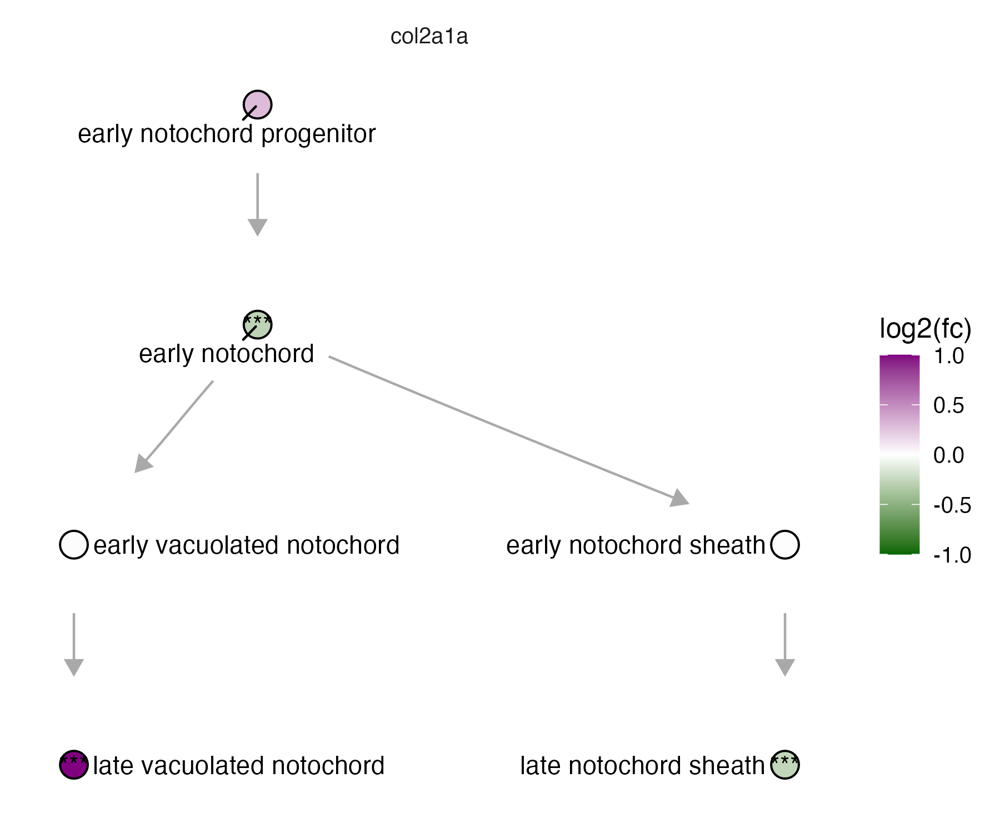

Plotting
Platt's plotting functions all take the same starting point — a cell_state_graph — and layer a different kind of data on top of it: plot_annotations() draws the graph's own node/edge metadata, plot_abundance_changes() and plot_degs() color it by a differential-abundance or DEG table, and plot_gene_expression() colors it by raw expression. Because they share a layout, you can move between them on the same graph object without recomputing anything.
Plotting a cell_state_graph
The function plot_annotations():
cell_state_graph- thecell_state_graphobject to plotcolor_nodes_by- which attribute to color nodes bylabel_nodes_by- which attribute to label nodes by
If you don't pass color_nodes_by/label_nodes_by, plot_annotations() doesn't just leave nodes uncolored — it falls back to whatever was stored on the cell_state_graph when it was created (new_cell_state_graph(..., color_nodes_by = ...)), and failing that, to the cell_group the underlying cell_count_set was built on. That's why the call below can omit them and still get sensibly-colored, sensibly-labeled nodes.
plot_annotations(notochord_state_graph, node_size = 4.5)

The function plot_abundance_changes():
cell_state_graph- thecell_state_graphobject to plotcomp_abund_table- a Hooke differential-abundance comparison table, with a fold-change column and a significance column per cell state
plot_abundance_changes() colors each node by the fold-change column in comp_abund_table (limited to fc_limits, default c(-3, 3)) and, by default, scales node size by how significant that change is (scale_node = TRUE) — so a node that's both large and saturated in color is a strong, confident abundance change, while a small pale node is a weak or uncertain one. If comp_abund_table has multiple comparisons in it (e.g. several timepoints), use facet_group to lay them out as separate panels instead of filtering down to one first, as the example below does with filter(timepoint_x==60).
To see how to run Hooke to make a comp_abund_table, see our differential abundance page.
plot_abundance_changes(notochord_state_graph, lmx_fc %>% filter(timepoint_x==60), node_size = 4.5)

The function plot_gene_expression():
cell_state_graph- thecell_state_graphobject to plotgenes- a list of genes to plotaggregate- whether to sum the genes in the genes list
With aggregate = FALSE (the default), each gene in genes gets its own node value, so plotting more than one gene at once is really plotting them side by side. aggregate = TRUE instead sums each state's mean expression across all the listed genes into a single combined value per node — useful for genes that act redundantly or are otherwise meant to be read as one signature, like lmx1bb/lmx1ba below. Two more parameters worth knowing about: fract_expr/mean_expr set the minimum fraction-expressing / mean-expression a gene needs to count as "expressed" in a state at all (both default to 0), and scale_to_range min-max normalizes each gene's expression to [0, 1] before plotting — handy for putting genes with very different expression magnitudes on the same visual scale, but it's not compatible with aggregate.
plot_gene_expression(notochord_state_graph, genes=c("lmx1bb", "lmx1ba"))

plot_gene_expression(notochord_state_graph, genes=c("lmx1bb", "lmx1ba"), aggregate = T)

The function plot_degs:
cell_state_graph- thecell_state_graphobject to plotdeg_table- a DEG table with per-cell-state log-fold-changes and p-values, e.g. fromcompare_genes_over_graph()orcompare_genes_within_state_graph()
plot_degs() needs deg_table to carry log-fold-changes and p-values per cell state — exactly the shape compare_genes_within_state_graph()/compare_genes_over_graph() output — and colors each node by fold change, scaled to fc_limits (default c(-3, 3); the example below tightens that to c(-1, 1) since col2a1a's changes are more modest). If deg_table has more than one contrast in it (multiple terms, say), facet_group (default "term") splits them into separate panels rather than overplotting them — the example below sidesteps that by filtering to a single gene first.
To see how to run DEGs to make a deg_table, see our Perturbation DEGs page.
plot_degs(notochord_state_graph, lmx1b_degs %>% filter(gene_short_name == "col2a1a"), node_size = 4.5, fc_limits = c(-1,1))

Next: see Background for the statistical model underlying Platt, or jump straight to the Reference page for the complete function listing.